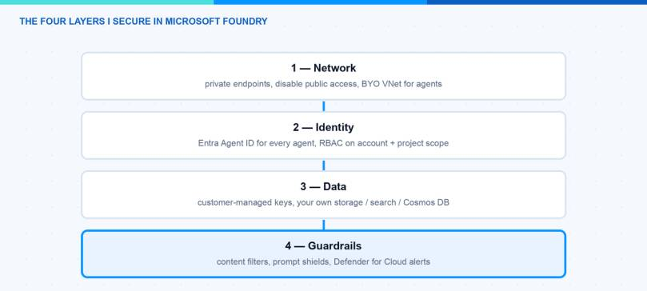
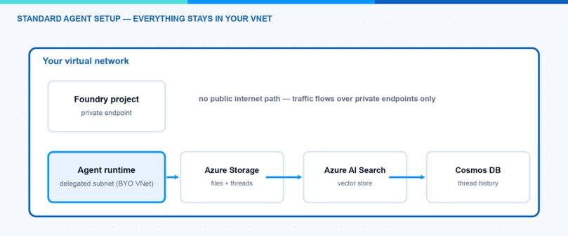

AI agents in production are a security topic, not only an AI topic. An agent has an identity, network paths, data at rest and a behavior that you need to control. In this blog post I explain how I secure Microsoft Foundry end to end, from the IT admin perspective: network isolation, agent identities, RBAC, encryption and guardrails. This is the checklist I would hand to any team that wants to move a Foundry agent from playground to production.
I think about it in four layers, and I will walk through them in this order.

Layer 1: How Do I Isolate the Network?
Microsoft Foundry has three network areas you control separately: inbound traffic to the Foundry resource, outbound traffic to dependent services, and the network of the agent runtime itself.
Inbound is classic Azure: a private endpoint on the Foundry account plus publicNetworkAccess: Disabled. You need three private DNS zones: privatelink.cognitiveservices.azure.com, privatelink.openai.azure.com and privatelink.services.ai.azure.com.
The agent runtime is the interesting part. With the standard agent setup you inject the agent runtime into a delegated subnet in your own VNet (delegation Microsoft.App/environments, minimum /27, recommended /24). Microsoft’s guarantee for this setup: no public egress, and all agent state stays in resources you own:
- Azure Storage — files the agent works with
- Azure AI Search — vector stores
- Azure Cosmos DB — threads and messages

That means conversation history and uploaded files are at rest in your tenant, under your encryption and residency rules. Since March 2026 tool traffic (MCP, Azure AI Search, Fabric) can also flow over private paths. There are ready-made Bicep and Terraform samples for the whole setup — use them, the dependency chain is long.
Note: “No public egress” has exceptions. Bing grounding, web search and SharePoint grounding still run over public Microsoft endpoints even in an isolated setup. If that is not acceptable, block these tools via Azure Policy. And a hard one: outbound VNet injection cannot be added to an existing resource — you must deploy it from the start or redeploy.
Layer 2: Which Identity Does an Agent Have?
This is where Microsoft did something genuinely new. With Microsoft Entra Agent ID (GA since April 2026), agents get first-class identities in Entra — visible, governable and revocable like users and service principals.
How it works in Foundry (details): when the first agent in a project is created, Foundry provisions an agent identity blueprint plus a shared agent identity for the project. All agents in development share this identity. When you publish an agent, it gets its own dedicated identity. At runtime there are no secrets involved — the blueprint has a federated credential trust with the project’s managed identity, and Entra issues short-lived tokens scoped to a specific audience like https://graph.microsoft.com.
For you as admin this means: open the Entra admin center under Agent ID > All agent identities, and you see every agent in the tenant — from Foundry, Copilot Studio and third-party platforms. From there you can apply Conditional Access to agents, watch risky agents in Identity Protection, and put lifecycle governance (owners, expiration) on them.
Granting an agent access to a resource is the same as for any service principal:
Hint: The publish step is a trap. Because publishing creates a new identity, the role assignments of the development identity do not carry over. Put “re-assign RBAC to the published agent identity” into your release checklist, otherwise the agent works in dev and fails in production.
Layer 3: Who May Do What? The Foundry RBAC Roles
In May 2026 Microsoft renamed the built-in roles — Azure AI User is now Foundry User and so on. The role IDs stayed the same, so no redeployment needed. These are the five roles I actually work with:
| Role | What it can do | I give it to |
|---|---|---|
| Foundry Agent Consumer | Only call agent endpoints | End users, calling apps |
| Foundry User | Build agents, run evals, no deploy/publish | Developers |
| Foundry Project Manager | Manage projects, publish agents | Team leads |
| Foundry Account Owner | Create accounts/projects, deploy models | Platform team |
| Foundry Owner | Everything | Break-glass, IaC pipeline |
Two details that are easy to miss. First, role assignments work on three scopes: account, project and even a single agent — the agent scope is evaluated for endpoint access, so you can give an app permission to exactly one agent. Second, Azure Owner or Contributor on the subscription does not include data actions: a subscription owner cannot call agents. That confuses people in every project I have seen.
Note: Key-based authentication bypasses RBAC completely — whoever has the key has everything. I disable local auth on the Foundry resource and go Entra-only wherever possible.
Layer 4: How Do I Control Agent Behavior? Guardrails
Content safety in Foundry was reorganized in 2026 into guardrails and controls. A guardrail is a named collection of controls, and each control is a risk plus an intervention point plus an action. New for agents: besides user input and model output, you can now intervene at tool call and tool response (both preview). That is exactly where indirect prompt injection lives — a poisoned document coming back from a retrieval tool.
What I switch on for a production agent:
- The four harm categories (hate, sexual, self-harm, violence) at medium severity — that is the default anyway.
- Prompt Shields for direct jailbreaks and indirect attacks embedded in third-party content.
- Task adherence (preview) — flags when the agent drifts away from its instructions.
- A blocklist with the internal terms that must never leave the company (up to 10,000 terms, regex supported).
Hint: An agent guardrail fully overrides the model guardrail — it does not merge with it. If you assign a slim guardrail to the agent, you may silently switch off filters that the model deployment had. Check the effective set, not the intended one.
On top of the built-in filters I put Microsoft Defender for Cloud AI threat protection. Since February 2026 it covers Foundry agents, currently without extra token cost. It correlates Prompt Shields signals with Microsoft threat intelligence and raises alerts for jailbreaks, data leakage or credential theft into Defender XDR — where the SOC already lives. I wrote about the endpoint side of this in Protect AI agents with Microsoft Defender.
What About Encryption and Data Residency?
By default Microsoft manages the keys. If compliance requires it, you can bring customer-managed keys from Key Vault or Managed HSM. Requirements: same region, soft delete plus purge protection, and a managed identity with unwrap permissions. Be aware this is a one-way door — you can move from Microsoft-managed to CMK, but not back.
The nice part of the standard agent setup: because threads, files and vectors live in your own Cosmos DB, Storage and AI Search, residency and encryption simply follow those resources. Model prompts are processed inside the deployment’s geography depending on deployment type, and are not used for training.
The Approach I Actually Use
For a production rollout I do it in this order:
- Deploy the Foundry resource with network isolation from day one (Bicep sample 15), because you cannot retrofit VNet injection.
- Entra-only auth, local keys disabled.
- RBAC minimal: developers get Foundry User on the project, apps get Foundry Agent Consumer on exactly one agent.
- Guardrail set per agent: defaults plus Prompt Shields plus blocklist; task adherence in audit mode first.
- Defender for Cloud AI plan on, alerts wired to the SOC.
- CMK only if compliance explicitly demands it.
Pitfalls I Now Avoid
- Retrofitting network isolation. Not possible for the agent subnet. Decide before the first deployment.
- Forgetting RBAC after publish. New identity, empty permissions. Release checklist.
- Trusting “private” for every tool. Bing and SharePoint grounding stay public — block them via policy if needed.
- Assigning slim agent guardrails. Override, not merge. Verify the effective filters.
- Leaving API keys enabled “for the quick test”. They bypass everything this post is about.
Where This Is Heading
Agent security is converging with normal identity and network security, and that is good news: Conditional Access, RBAC, private endpoints and SOC alerting are muscles your organization already has. The new Foundry Control Plane (preview) is pulling governance of the whole agent fleet into one place, and Purview integration brings prompts and responses into the compliance world. My advice: treat every agent like a new employee — it gets an identity, least privilege, a network policy and supervision. Start with the network isolation docs and build the checklist from there.
I hope this saves you a security review round or two.
Stay healthy,
Cheers Jannik